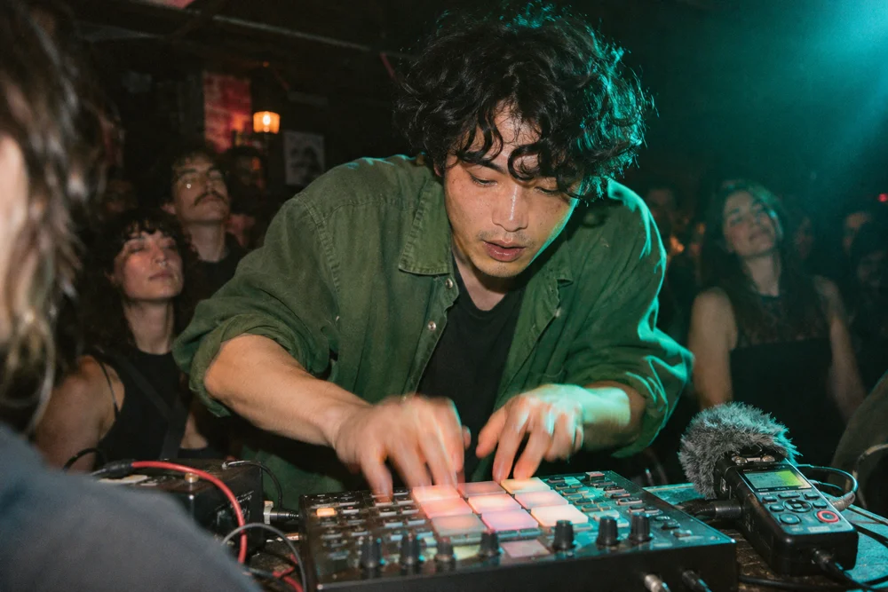

Show announcement
The first turn at Switchplate Hall
Two record bags, one floor-level booth and a deliberate change of pace.
Read the story
Sample editorial
Announcements, studio notes and stories from our example Denver season.
Show announcement
Two record bags, one floor-level booth and a deliberate change of pace.
Read the story
Field notes · Sample editorial
Headphones on, fader down. A closer look at the minute before two tracks meet.
Read the story
Artist notebook
Inside the vocal loop at the center of Velour Antenna’s live set.
Read the story
Listening notes
A field recording finds a second life in a Silt Index rhythm.
Read the story
Production notes
How a live rack picks up the pulse of a vinyl closing track.
Read the story
Poster notes
A loudspeaker, a fern and the pink ink that holds the flyer together.
Read the story